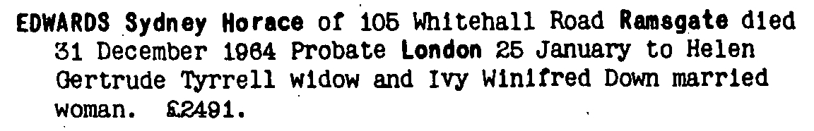
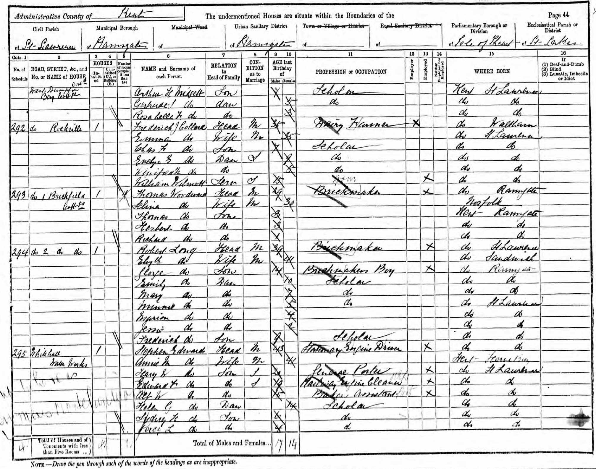
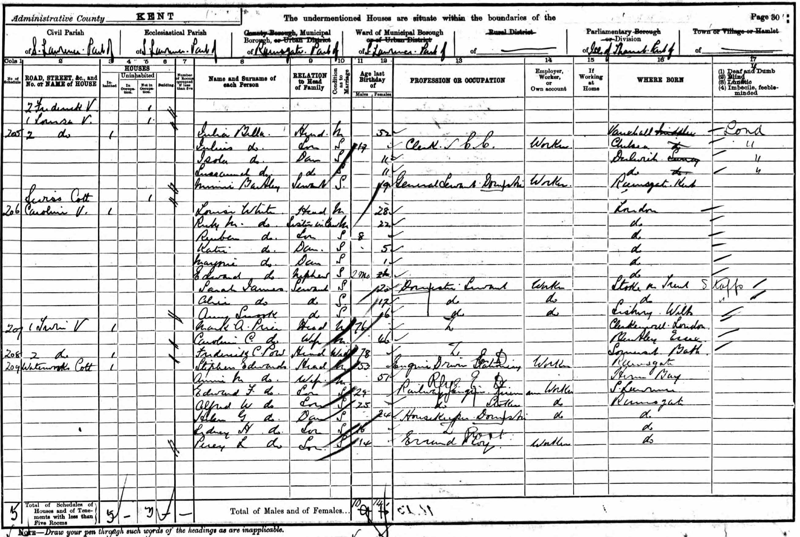
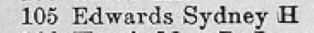

Sydney Horace Edwards 1884 - 1964
[ Home ] | [ Calendar ] | [ Surnames Index ] | [ Family History ]The son of Stephen Edwards (a stationery engine driver) and Ann Lasslett, Sydney Edwards, the first cousin three-times-removed on the mother's side of <a href="I1.html">Nigel Horne</a>, was born in St Lawrence, Thanet, Kent, England on Nov 21, 1884<span class="citation">1,2</span>.</p><p>Sydney spent all of his life in Kent, England. Throughout his life, he lived in several places around the county: in West Dumpton, Thanet, Kent, England on Apr 5, 1891<span class="citation">6</span>; at Waterworks Cottage, St Lawrence in Thanet on Mar 31, 1901<span class="citation">7</span>; on Waterworks House, Southwood Road, St Lawrence in Thanet on Apr 2, 1911<span class="citation">8</span>; at Southwood Road, St Lawrence, St Lawrence Intra in Thanet in 1921<span class="citation">5</span>; on 90 Southwood Road, St Lawrence in Thanet on Jun 19, 1921<span class="citation">9</span> (when he was living with his parents); and on 105 Whitehall Road, Ramsgate on Sep 29, 1939<span class="citation">1</span>, when he was living with his sister, Helen Gertrude, in 1955<span class="citation">4</span> and in 1964. Sydney In 1921 he was working at Own Account Blind Chair Caner.<p>He died on Dec 31, 1964 in Thanet<span class="citation">3</span>.
Parents
- Stephen was born c. May 1847
- Ann Maria was born c. 1849
Citations
- 1939 Register - Findmypast (was the head of the household Incapacitated (Blind))
- England & Wales births 1837-2006 - Findmypast
- England & Wales deaths 1837-2007 - Findmypast
- 1955 Kelly's Thanet Directory
- 1921 Census Of England & Wales - Findmypast
- 1891 England, Wales & Scotland Census - Findmypast (was age 6 and the son of the head of the household)
- 1901 England, Wales & Scotland Census - Findmypast (was age 16 and the son of the head of the household)
- 1911 Census for England & Wales - Findmypast (was age 26 and the son of the head of the household. bad sight from birth)
- 1921 Census Of England & Wales - Findmypast (was age 36 and the son of the head of the household)
Media
Sydney Edwards - probate

1891 UK Census

1901 UK Census

1955 Kelly's Thanet Directory

England & Wales births 1837-2006 - BMD/B/1884/4/AZ/000175/149
England & Wales deaths 1837-2007 - BMD/D/1964/4/AZ/000250/107
1939 Register Transcription - TNA-R39-1765-1765A-018-30
1911 Census for England & Wales - GBC/1911/RG14/04527/0555/3
1901 England, Wales & Scotland Census - GBC/1901/0007458561
1891 England, Wales & Scotland Census - GBC/1891/0005906628
Family Tree

Generated by Ged2Site. Last updated on Jul 20, 2025